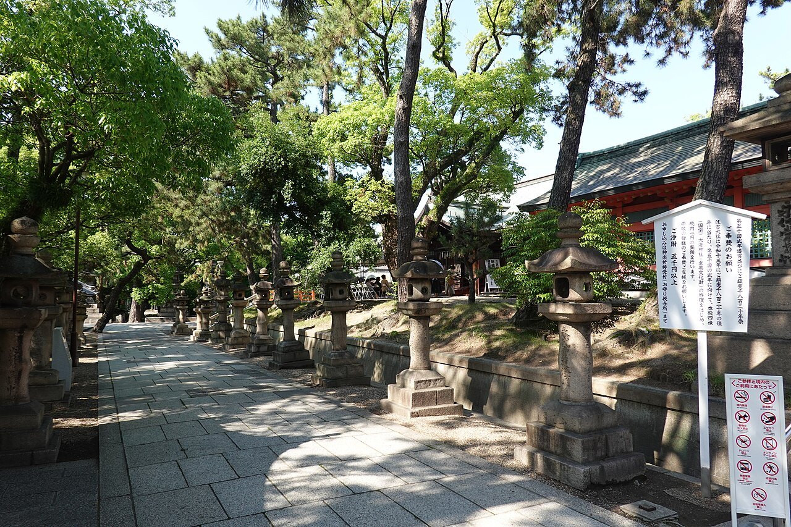

住吉大社の「誕生石」に隠された、島津家の出自と近衛家との700年
大阪・住吉大社の境内、社務所の正面あたりに「誕生石」と呼ばれる聖地がある。石玉垣に囲まれたひと抱えほどの霊石。現在は安産祈願のスポットとして知られ、戌の日には妊婦さんとご家族の行列ができる場所だ。
しかしこの石の由来を辿ると、安産どころではない――鎌倉幕府の権力闘争、渡来系氏族の生存戦略、中世の系図仮冒、そして近代日本の悲劇にまで、700年超の歴史が一本の糸でつながっている。今回はこの石を起点に、島津家の出自と近衛家との700年の関係を掘り起こしてみたい。

伝説――大雨の夜、狐火に照らされた出産
まずは住吉大社に伝わる物語から。
源頼朝の寵愛を受けた丹後局という女性が、頼朝の子を身籠もった。これを知った正室・北条政子は激怒し、畠山重忠に殺害を命じる。しかし重忠は丹後局を殺すことができず、身代わりを立てて逃がした。
鎌倉を追われた丹後局は、わずかな供と上方へ逃れる。ところが摂津国住吉の付近で産気づいてしまう。大雨の夜、住吉大社の境内で傍らの大石にすがりつきながら男児を出産。そのとき、末社の稲荷社の神狐がご神燈を掲げて出産を見守ったという。
この男児こそが、後の薩摩島津氏の祖・島津忠久。鹿児島では今も慶事の日に雨が降ると「島津雨ですね」と挨拶を交わす風習が残り、島津家が代々稲荷信仰を厚くしたのも、この出産伝説に由来するとされている。
史実との乖離――「頼朝の子」は後付けだった
ドラマチックな伝説だが、歴史学的に検証するとかなり怪しい。
島津忠久が源頼朝の子であったという記述が史料に現れるのは、15世紀の初め頃からである。同時代の史料、つまり鎌倉時代の一次史料にはそのような記録は存在しない。
さらに年代の矛盾もある。島津家の諸家伝では忠久の生年を治承3年（1179年）としているが、その1179年の時点で『山槐記』や『玉葉』に「左兵衛尉忠久」として記載されている。官職に就ける成人男子だったということは、実際の生年は十数年以上遡ると推定され、1179年生まれという設定自体が破綻している。
では忠久は何者なのか。本姓は惟宗氏で、実父については惟宗忠康とする説が近年有力視されている。惟宗氏とは、讃岐国香川郡を本貫とする秦氏の一族が京に移住し、883年に惟宗朝臣の姓を賜った氏族だ。明法家（法律の専門家）や医家として知られる実務官僚の家系であり、源氏の血筋とは縁遠い。
系図仮冒で源氏を名乗る行為は、戦国時代には広く見られた（その筆頭が徳川家康だろう）。島津家の「頼朝落胤」主張はその先駆的な事例と言える。15世紀に島津家内部の正統性争いが激化する中で、初代を将軍の血筋に引き上げる権威づけが必要になったのだ。
鍵は「近衛家」――なぜ住吉大社だったのか
ここで一つの疑問が浮かぶ。秦氏の本拠は山城国葛野郡太秦（現・京都市右京区）であり、住吉は摂津国。秦氏→惟宗氏の故地とは言いがたい。ではなぜ、出産伝説の舞台に住吉大社が選ばれたのか。
答えの鍵を握るのが、五摂家筆頭・近衛家との主従関係だ。
惟宗氏は平安末期以降、摂関家（とくに近衛家）の下家司（しもけいし）を独占的に継承していた。下家司とは貴族の家の実務を取り仕切る管理職であり、とくに全国に散らばる摂関家領荘園の経営を担当した。実際、惟宗氏の一部は荘園経営のため現地に下向して武士化していった。
そして、忠久が「島津」を名乗る由来となった島津荘（現在の鹿児島県）こそ、近衛家の領する荘園だった。忠久は元暦2年（1185年）、近衛家の領する島津荘の下司職に任じられている。つまり島津氏の出発点は、近衛家の荘園管理者として九州に送り込まれた実務官僚だったのだ。
伝説の中にもその痕跡がある。元旦参拝のため住吉大社を訪れた摂政・近衛基通が丹後局を救い、丹後局は近衛基通の家来・惟宗広言のもとに嫁いだとされている。
住吉大社は摂津国一宮であり、二十二社の一つとして朝廷の崇敬がきわめて厚い。平安貴族が頻繁に参詣する場であり、住吉津は瀬戸内海航路の起点として近衛家の荘園経営とも結節する要港だった。
つまり住吉と惟宗氏のつながりは、秦氏としての氏族的な縁ではなく、近衛家の家政機関としての職務上の縁だったと考えられる。近衛家が参詣する住吉大社と、近衛家の荘園を管理するために西国へ向かう際の要港・住吉津。その二つが重なる場所に出産伝説が据えられたのは、後世の島津家が近衛家との関係を正統性の根拠にする際、もっとも物語として説得力のある舞台を選んだ結果ではないだろうか。
700年の紐帯――島津家と近衛家
この推論を裏付けるように、島津家と近衛家の関係はその後700年以上にわたって続いた。
島津家は室町時代初頭まで惟宗朝臣を称し、その後は近衛家の庶流として藤原朝臣を名乗るようになる。あの篤姫（天璋院）が将軍家に嫁ぐ際も、形式的には近衛家養女として輿入れした。歴代藩主も参勤交代の途上で住吉大社に立ち寄り、高張提灯を奉納し続けた。
誕生石の伝説は、ただの昔話ではない。島津藩というアイデンティティを支える公式の物語として、藩政を通じて機能し続けたのである。
近衛家の落日、島津家の隆盛
この二つの家の現在を見比べると、歴史の皮肉を感じずにはいられない。
近衛家は20世紀に苛烈な運命を迎えた。近衛文麿は三度の首相を務めたものの、1945年12月、A級戦犯に指定され服毒自殺。長男・文隆はプリンストン大卒の国際派だったが、満州で敗戦を迎え、シベリアに抑留されて1956年に41歳で死去。嗣子はなく、近衛文麿の直系男子の血統はここで途絶えた。
一方の島津家は驚くほど元気だ。株式会社島津興業として仙巌園や尚古集成館を運営し、世界文化遺産「明治日本の産業革命遺産」を保有する。現当主（第33代）の島津忠裕は日本興業銀行出身の経営者で、2024年末に父・修久から当主を継いだ。
しかも島津家は天皇家にも血を入れている。昭和天皇の皇后・香淳皇后の母は島津忠義の娘であり、今上天皇に至るまで島津の血は皇室に流れている。明仁上皇もご自身が島津家の血を引くことに言及されたことがある。
さらに第32代当主・修久の妻は西郷隆盛の曾孫であり、結婚式の仲人は大久保利通の嫡孫が務めた。薩摩藩のオールスターキャストが令和まで健在なのである。
おわりに――石は語らず、されど語り継がれる
住吉大社の誕生石は、ただの石だ。だが、この石をめぐる物語の中には、渡来系氏族の生存戦略、摂関家の荘園経営ネットワーク、中世の系図仮冒の政治学、薩摩藩700年の正統性装置、そして近代日本の明と暗が凝縮されている。
伝説を「作った側」の近衛家は直系が断絶し、「作られた物語」のほうが生き続けている。誕生石の前では今日も安産祈願の参拝者が手を合わせ、島津家の家紋入りの提灯が静かに下がっている。
歴史とは、勝者の記録でもなく、敗者の記録でもない。物語が物語として生き残るかどうかの、長い長い淘汰の過程なのかもしれない。
参考文献・参考リンク
- 住吉大社 公式サイト「由緒」
- 島津興業 公式サイト「島津家の歴史」
- 島津忠久 - Wikipedia
- 島津氏 - Wikipedia
- 惟宗氏 - Wikipedia
- 秦氏 - Wikipedia
- 近衛家 - Wikipedia
- 近衛文麿 - Wikipedia
- 島津修久 - Wikipedia
- 島津忠裕 - Wikipedia
- 住吉大社 - Wikipedia
- JR西日本「出会いの旅」島津家紀行
- 丹後内侍 丹後局 2人の解説【島津忠久の母】
- 住吉大社の誕生石〜島津忠久誕生地〜
- 住吉大社 後編「人生の発達を約束する初辰まいり」
- 誕生石｜住吉大社 安産祈願スポット紹介
- 国土交通省 多言語解説データベース「誕生石」(PDF)
- 鹿児島大学附属図書館「島津氏と近衛家の七百年」